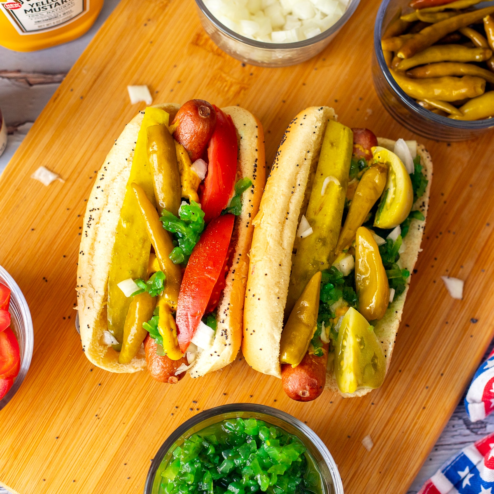

Chicago-Style Hot Dog

This hot dog is a Windy City classic and a big favorite with sports fans! The frank must be all-beef, the bun must
be poppy seed, and the ingredients must be piled onto the bun in the order specified.
And whatever you do, don't spoil the splendor of this Chicago dog with ketchup!
Ingredients
- 1 all-beef hot dog
- 1 poppy seed hot dog bun
- 1 tablespoon yellow mustard
- 1 tablespoon sweet green pickle relish
- 1 tablespoon chopped onion
- 2 tomato wedges
- 1 dill pickle spear
- 2 sport peppers
- 1 dash celery salt
- Bring a pot of water to a boil over high heat. Reduce heat to low, place hot dog in water, and cook until
warmed through, about 5 minutes. Remove hot dog from water and set aside.
- Place a steamer basket into the pot and steam poppy seed bun until warm, about 2 minutes.
- Place hot dog in steamed bun. Pile on toppings in this order: mustard, relish, onion, tomato, pickle, peppers,
and celery salt. The tomato wedges should be nestled between hot dog and top of bun on one side. Place pickle
between hot dog and bottom of bun on the other side. Don't even think about ketchup!